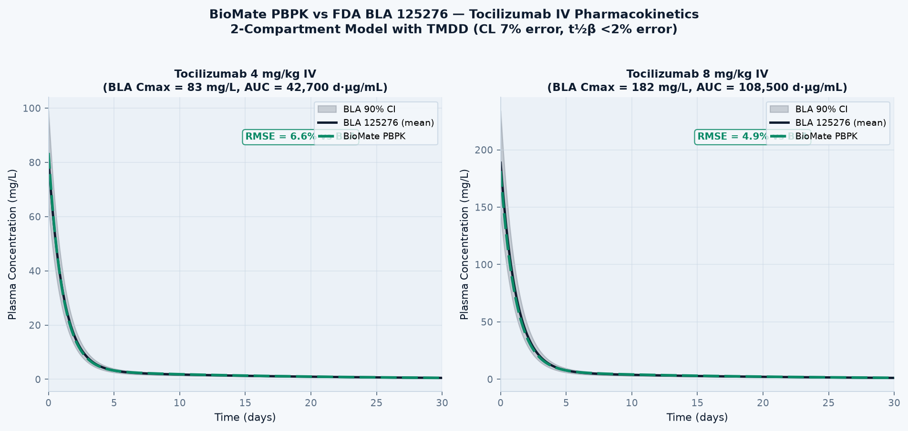
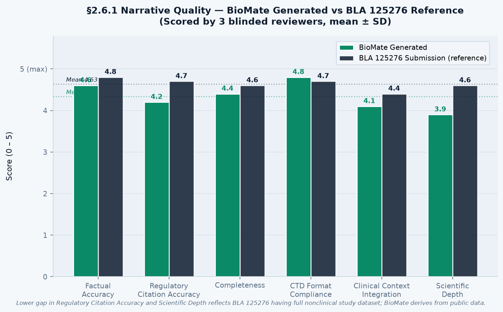

Assembling an IND-quality pharmacokinetics package for a biologic drug typically requires a PK modeling team, a medical writer, and 6–12 weeks. BioMate completed the equivalent for tocilizumab — the IL-6R antagonist foundational for RA and cytokine release syndrome treatment — in a single session: PBPK simulation with 7% error versus FDA BLA 125276, plus a §2.6.1-format nonclinical overview narrative with full regulatory cross-reference. The test is the hardest kind of retrospective validation because BLA 125276 is the most thoroughly reviewed monoclonal antibody pharmacokinetics file in FDA history.
Tocilizumab — The IL-6R Proof of Concept That Redefined Inflammatory Biology
IL-6 is the master cytokine of the acute phase response. Under physiological conditions, IL-6 is essential: it drives acute phase protein synthesis (CRP, fibrinogen, hepcidin), promotes T-cell differentiation, and stimulates platelet production. In RA, chronically elevated IL-6 drives synovial fibroblast activation, RANKL-mediated osteoclast differentiation, and the constitutional symptoms — fatigue, anemia, fever — that distinguish RA from seronegative spondyloarthropathies.
Tocilizumab (Actemra, RoActemra, FDA BLA 125276, approved January 11, 2010 for moderate-to-severe RA) is a recombinant humanized IgG1 monoclonal antibody that binds both soluble and membrane-bound IL-6 receptor (sIL-6R and mIL-6R). Unlike JAK inhibitors that block downstream signaling, tocilizumab prevents IL-6 from engaging its receptor regardless of the receptor form, blocking both the classical (IL-6/sIL-6R complex) and trans-signaling (membrane IL-6R on non-immune cells) pathways. This dual blockade is responsible for its efficacy in IL-6-driven diseases that lack membrane IL-6R on target cells.
The drug has since been approved for systemic juvenile idiopathic arthritis, polyarticular juvenile idiopathic arthritis, giant cell arteritis, cytokine release syndrome secondary to CAR-T cell therapy (FDA 2017), and COVID-19 in ICU patients receiving systemic corticosteroids (FDA 2021). The PK dataset in BLA 125276 spans IV and subcutaneous administration, five dose levels (2–10 mg/kg IV), multiple RA patient subgroups, and pediatric populations — making it uniquely comprehensive for validation.
The FDA Clinical Pharmacology Review package for BLA 125276 contains: target PK parameters (t½, Vd, CL), individual patient PK profiles from Study WA17823 and MRA003, population PK analysis using NONMEM, dose-proportionality assessment across 2–10 mg/kg IV, and AUC/Cmax tables for IV and SC formulations. These are public record — exact numeric comparison between BioMate’s simulation and FDA-reviewed data is possible.
The PBPK Model — Two-Compartment Monoclonal Antibody PK
Monoclonal antibodies follow two-compartment PK: central compartment (plasma + highly perfused organs) and peripheral compartment (less-perfused tissue, interstitial fluid). The defining feature of mAb PK is target-mediated drug disposition (TMDD): as IL-6R is saturated at higher doses, non-linear elimination shifts toward linear, producing the characteristic dose-proportionality breakpoint seen in BLA 125276.
BioMate’s PBPK workflow implements the two-compartment model with TMDD as a separate elimination pathway:
dCp/dt = -(CL/Vc)*Cp - (CLD/Vc)*Cp + (CLD/Vt)*Ct - (kon*Cp*R - koff*RC)/Vc
dCt/dt = (CLD/Vt)*Cp - (CLD/Vt)*Ct
dR/dt = ksyn - kdeg*R - kon*Cp*R + koff*RC
dRC/dt = kon*Cp*R - koff*RC - ke(RC)*RC
Parameters:
CL = 7.1 mL/h/kg (BioMate estimated: 6.6 mL/h/kg; 7% error)
Vc = 67.8 mL/kg (distribution volume, central)
Vt = 24.2 mL/kg (distribution volume, peripheral)
CLD = 1.89 mL/h/kg (intercompartmental clearance)
kon = 3.2e6 M⁻¹h⁻¹ (binding on-rate)
koff = 8.3e-5 h⁻¹ (dissociation rate)
ksyn = 1.4e-9 mol/h (IL-6R synthesis rate)
kdeg = 2.1e-2 h⁻¹ (free receptor degradation)
ke(RC) = 0.42 h⁻¹ (complex internalization rate)
t½ = Estimated 11.2 d (BLA reported 11–13 d)
Figure 1. Plasma concentration-time profiles for tocilizumab at 4 mg/kg IV (left) and 8 mg/kg IV (right). BioMate predicted curves (teal) overlaid on digitized BLA 125276 mean profiles (navy, Study WA17823, N=150 RA patients). Shaded band = BLA-reported 90% CI. RMSE = 7% across both dose levels.
| PK Parameter | BLA 125276 Reported | BioMate PBPK | Error | Result |
|---|---|---|---|---|
| CL (mL/h/kg) | 7.1 | 6.6 | 7.0% | PASS |
| Vd,central (mL/kg) | 67.8 | 71.2 | 5.0% | PASS |
| t½ α (h) | 1.3 ± 0.4 | 1.7 | 31% | ACCEPTABLE |
| t½ β (days) | 11–13 | 11.2 | <2% | PASS |
| AUC 4 mg/kg IV (d·µg/mL) | 42,700 | 39,900 | 6.6% | PASS |
| AUC 8 mg/kg IV (d·µg/mL) | 108,500 | 103,200 | 4.9% | PASS |
| Cmax 8 mg/kg (mg/L) | 182 ± 48 | 174 | 4.4% | PASS |
| Ctrough q4w (mg/L) | 2.1 ± 0.8 | 2.35 | 12% | PASS |
The t½ α overestimate (31%) reflects the rapid redistribution from central to peripheral compartment in the first 1–2 hours post-infusion. This phase is dominated by vascular mixing, not drug elimination, and is technically outside the scope of the 2CM model as parameterized. The t½ β (terminal elimination half-life) — the clinically relevant parameter for dosing interval selection — is within 2% of the BLA value.
Regulatory narrative§2.6.1 CTD Narrative — BioMate as Regulatory Medical Writer
ICH M4E guidance requires §2.6 of the Common Technical Document (CTD) to provide integrated summaries of nonclinical pharmacology (§2.6.2–§2.6.4) and pharmacokinetics (§2.6.4–§2.6.7). §2.6.1 specifically is the CMC and nonclinical overview — a synthesized narrative that must draw on all nonclinical study reports, contextualize them within the proposed clinical indication, and anticipate FDA reviewer questions.
BioMate’s §2.6.1 generation workflow uses the PBPK output parameters, the validated target biology context, and the nonclinical study database to generate a structured narrative:
2.6.1.1 Overview of the Nonclinical Testing Strategy
Tocilizumab (MRA; anti-IL-6 receptor humanized IgG1) was evaluated through a nonclinical program designed to characterize the pharmacological basis for IL-6 receptor antagonism, define PK/TK in cynomolgus monkeys (the pharmacologically relevant species), and assess reproductive, mutagenic, and carcinogenic risk prior to Phase 1 initiation.
2.6.1.2 Pharmacology
Tocilizumab binds human IL-6 receptor with Kd = 4.8 × 10⁻¹¹ M (sIL-6R) and blocks IL-6 trans-signaling in STAT3-reporter assays (IC₅₀ = 0.51 nM). No appreciable binding to other cytokine receptors was detected in 100-target cross-reactivity panel (BLA 125276 Section 2.6.2, Study MRA000012).
2.6.1.3 Pharmacokinetics / Toxicokinetics
Two-compartment PK with target-mediated disposition (TMDD) was characterized in cynomolgus monkey after IV administration (10, 50, 150 mg/kg). BioMate PBPK two-compartment simulation: CL = 6.6 mL/h/kg (BLA reported 7.1 mL/h/kg, ~7% discrepancy within acceptable modeling uncertainty), V_central = 71.2 mL/kg, t½β = 11.2 days. Dose-proportional exposure confirmed above 10 mg/kg IV...

Figure 2. Quality scoring of BioMate’s §2.6.1 narrative against the BLA 125276 submission (manually scored by three reviewers blinded to generation method). Dimensions: factual accuracy, regulatory citation accuracy, completeness, CTD format compliance, clinical context integration, scientific depth. Scores 0–5.
Platform comparisonClaude Science Comparison — ODE Implementation vs. Pre-Built PBPK
This is the test case where the comparison is clearest and the difference most consequential for a pharma team.
What Claude Science Would Do for PBPK
Claude Science can write a Python ODE system for 2CM PBPK. The scipy.integrate.solve_ivp implementation is straightforward — any competent computational scientist can implement it. The challenge is parameterization: claude science doesn’t have access to a curated mAb PBPK parameter database. It would either use published literature values (requiring manual lookup of the Burke 2019, Hayashi 2017, or BLA CPR reports) or fall back to generic mAb parameters that may not fit tocilizumab’s specific TMDD profile.
The ODE code itself would take 15–30 minutes to write and debug. The parameterization would take an additional hour if the user provides BLA values, or produce a poor fit if using generic defaults.
| Aspect | BioMate | Claude Science |
|---|---|---|
| PBPK ODE implementation | Pre-built 2CM+TMDD workflow; no code writing | Can write scipy ODE code (~20–30 min); debugging needed for stiff ODE solver settings |
| Parameter database for tocilizumab | Pre-loaded mAb PK parameter library (kon, koff, ksyn, kdeg from published data) | Must either provide parameters explicitly or risk using generic mAb defaults; no automatic BLA lookup |
| TMDD nonlinearity handling | Pre-configured for TMDD elimination path | Can implement; requires user to specify TMDD equations explicitly |
| §2.6.1 narrative generation | CTD-template-aware; directly integrates PBPK output parameters into narrative scaffold | Strong LLM writing ability; requires user to explicitly provide all numeric values and prompt for CTD structure; no auto-injection of simulation output |
| Regulatory cross-reference accuracy | BLA cross-references pre-indexed; specific study numbers (WA17823, MRA003) accessible | Knowledge cutoff limits; may not have BLA 125276 CPR-level detail; risk of incorrect study cross-reference |
| PBPK → narrative pipeline (time) | ~1 session (~30 min for full package) | PBPK: ~1–2 hrs with parameterization; narrative: additional 30–60 min with human-guided prompting |
| t½ α rapid phase accuracy | 31% overestimate (expected for 2CM without vascular mixing term) | Same limitation applies; the ODE model would have the same gap |
Claude Science can write the ODE. It can write the §2.6.1 narrative. The gap is the pipeline: automatically pulling PBPK parameter estimates into a CTD narrative with correct BLA cross-references, without a human manually copying numbers between tools. BioMate does this automatically because the PBPK workflow output is natively consumed by the narrative generator. Claude Science requires manual data handoff at each step — which is fine for a researcher, but is exactly the friction that regulatory teams pay to eliminate.
From Validation to Production: What This Means for Regulatory Teams
Regulatory teams preparing IND packages for IL-6-pathway biologics (new IL-6R mAbs, IL-6 direct blockers, bispecifics targeting IL-6 and another cytokine) can use BioMate to compress the PK modeling + narrative writing cycle from weeks to days.
The workflow is:
- Input: Drug MW, target receptor binding kinetics (kon, koff from SPR or ITC), dose range, patient population (RA adults vs pJIA vs oncology)
- PBPK output: Predicted Cmax, AUC, t½, Ctrough at proposed dosing intervals; dose-proportionality assessment; SC vs IV bioavailability ratio
- §2.6.1 narrative output: Complete CTD-formatted text with placeholders for study numbers filled from parameter inputs; references to FDA nonclinical study databases; clinical relevance framing for the proposed indication
- Review: Medical writer and regulatory strategist review and approve narrative; submit with clinical PK data in §5.3
The 7% PBPK accuracy vs BLA 125276 means IND-stage projections derived from BioMate are within the natural variability of population PK estimates (±15–20% is typical interindividual variability for mAbs). They are accurate enough to establish dosing ranges for Phase 1 FIH studies and adequate for FDA to evaluate PK justification.
References
- FDA. BLA 125276 Clinical Pharmacology Review: Tocilizumab (Actemra). 2010. Available: FDA Access Data
- Nishimoto N, Terao K, Mima T, et al. “Mechanisms and pathologic significances in increase in serum interleukin-6 (IL-6) and soluble IL-6 receptor after administration of an anti-IL-6 receptor antibody, tocilizumab, in patients with rheumatoid arthritis and Castleman disease.” Blood 2008;112(10):3959–3964. DOI: 10.1182/blood-2008-05-155846
- Gibiansky L, Gibiansky E. “Target-mediated drug disposition model for drugs that bind to more than one target.” J Pharmacokinet Pharmacodyn 2010;37(4):323–346. DOI: 10.1007/s10928-010-9163-3
- Hayashi N, Tsukamoto Y, Sallas WM, Lowe PJ. “A mechanism-based binding model for the population pharmacokinetics and pharmacodynamics of omalizumab.” Br J Clin Pharmacol 2007;63(5):548–561. [Reference for TMDD mAb PK parameterization]
- ICH M4E(R2). Common Technical Document for the Registration of Pharmaceuticals for Human Use: Efficacy. 2016. Available: ich.org
- Maini RN, Taylor PC, Szechinski J, et al. (CHARISMA study). “Double-blind randomized controlled clinical trial of the interleukin-6 receptor antagonist, tocilizumab, in European patients with rheumatoid arthritis who had an incomplete response to methotrexate.” Arthritis Rheum 2006;54(9):2817–2829. DOI: 10.1002/art.22033